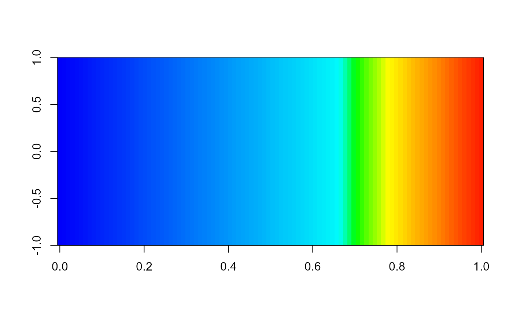

Searches the 7140 cpt-city palette names and returns those that match your search term. Case-insensitive by default.
find_cpt(name, ignore.case = TRUE, fixed = FALSE)Character. Keyword to search for within palette names.
Logical. If TRUE (default), search is
case-insensitive. Ignored when fixed = TRUE.
Logical. If FALSE (default), name is
treated as a regular expression. Set to TRUE for literal
string matching (faster, but case-sensitive).
A character vector of palette names that contain the keyword. Returns a zero-length vector if nothing matches.
This is a thin wrapper around grep. You can pass
regex patterns like "^oc_" to find all palettes starting with
"oc_" or "temperature|thermal" to match either term.
library(cptcity)
# Case-insensitive search (default)
find_cpt("temperature")
#> [1] "arendal_temperature" "idv_temperature" "jjg_misc_temperature"
#> [4] "kst_03_red_temperature"
# Case-sensitive
find_cpt("Temperature", ignore.case = FALSE)
#> character(0)
# Regex: all palettes starting with "oc_"
find_cpt("^oc_")
#> [1] "oc_ndvi" "oc_rainbow" "oc_sst" "oc_zeu"
# Literal match (faster, exact substring — case-sensitive)
find_cpt("rain", fixed = TRUE)
#> [1] "colo_alpen_sky_rain_brolly"
#> [2] "colo_lightningmccarl_taste_the_rainbow"
#> [3] "ds9_rainbow"
#> [4] "gist_rainbow"
#> [5] "gmt_GMT_rainbow"
#> [6] "grass_rainbow"
#> [7] "grass_terrain"
#> [8] "imagej_brain"
#> [9] "jjg_ccolo_alpen_sky_rain_brolly"
#> [10] "jjg_ccolo_lightningmccarl_taste_the_rainbow"
#> [11] "jjg_misc_rainfall"
#> [12] "jjg_neo10_elem_rain"
#> [13] "jjg_neo10_othr_faint_rainbow"
#> [14] "jjg_neo10_othr_pastel_rainbow"
#> [15] "jjg_neo10_othr_rainbow_sunset"
#> [16] "kst_13_rainbow"
#> [17] "kst_34_rainbow"
#> [18] "kst_38_rainbow18"
#> [19] "kst_39_rainbow_white"
#> [20] "kst_40_rainbow_black"
#> [21] "ma_icecream_rainbowsherbet"
#> [22] "neota_elem_rain"
#> [23] "neota_othr_faint_rainbow"
#> [24] "neota_othr_pastel_rainbow"
#> [25] "neota_othr_rainbow_sunset"
#> [26] "oc_rainbow"
#> [27] "ocal_spectrum_rainbow_medium"
#> [28] "ocal_spectrums_rainbow_002"
#> [29] "ocal_spectrums_rainbow"
#> [30] "pd_skies_rainbow"
#> [31] "pj_1_a_rainbow"
#> [32] "pj_1_black_rainbow"
#> [33] "pj_2_palest_rainbow"
#> [34] "pj_2_white_rainbow"
#> [35] "pj_2_wisteria_rain"
#> [36] "pj_4_deeprainbow"
#> [37] "pj_5_anotherrainbow"
#> [38] "pj_5_harryrainbow"
#> [39] "pj_5_mysticrainbow"
#> [40] "pj_5_rainbowrich"
#> [41] "pj_classic_paler_rainbow"
#> [42] "rc_rainbow"
#> [43] "ukmo_main_rain_mmh"
#> [44] "ukmo_wow_rain_mmh"
#> [45] "sci_mri_rainbow"
#> [46] "weather_rainbow"
#> [47] "album_purple_rain"
#> [48] "sci_mri_rainbow"
#> [49] "weather_rainbow"
#> [50] "album_purple_rain"
#> [51] "sci_mri_rainbow"
#> [52] "weather_rainbow"
#> [53] "album_purple_rain"
#> [54] "flag_bahrain"
#> [55] "flag_ukraine"
# Use the result directly
image(matrix(1:100), col = cpt("idv_temperature"))

if (FALSE) { # \dontrun{
library(ggplot2)
ggplot(faithfuld, aes(waiting, eruptions)) +
geom_raster(aes(fill = density)) +
scale_fill_gradientn(colours = cpt(pal = "ncl_radar", n = 100))
} # }